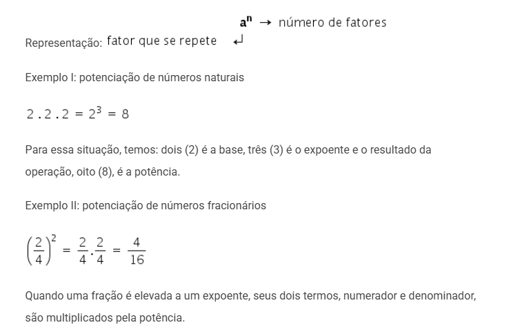
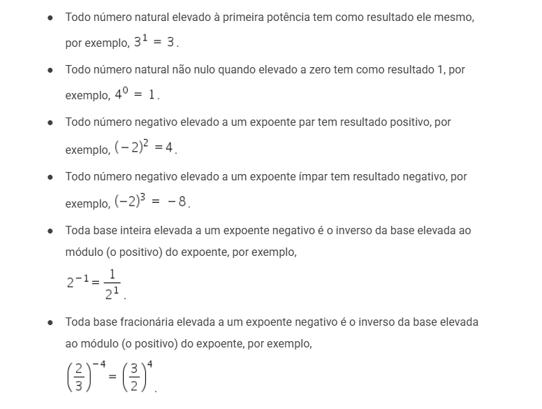
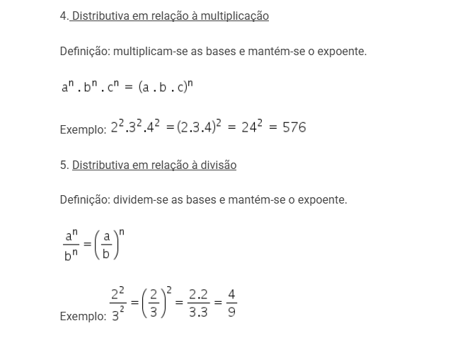
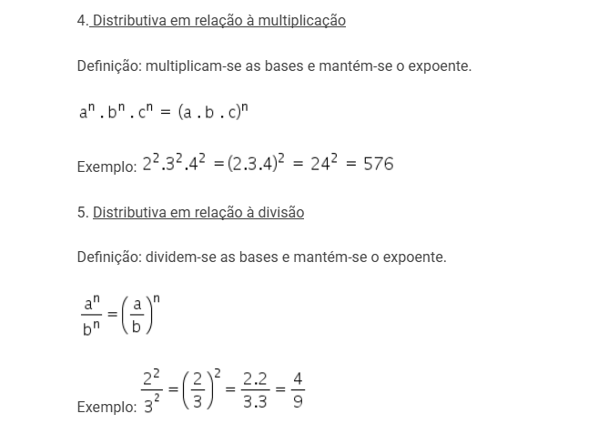
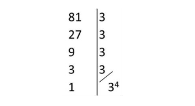

πclass — o principal pilar do seu aprendizado


As operações com os números reais não possuem nenhuma divergência em relação às operações com os demais conjuntos. Então, com eles, é possível realizar todas as operações, sendo elas: adição, subtração, multiplicação, potenciação e radiciação.
Os números reais possuem algumas propriedades importantes. Veja cada uma delas a seguir.
Considere n um número real.
Existe um elemento neutro na soma que é o 0.
n + 0 = n
Existe um elemento neutro da multiplicação entre números reais que é o 1.
n · 1 = n
Considere n e m números reais.
Na adição, a ordem das parcelas não altera a soma:
m + n = n + m
Na multiplicação, a ordem dos fatores não altera o produto: m · n = n · m
Considere a, m, n números reais.
Na adição de três números, não importa quais números serão somados primeiro.
(a + m) + n = a + (m + n)
Na multiplicação de três números, não importa quais números serão multiplicados primeiro.
(a · m) · n = a · (m · n)
Considere a, m, n números reais.
Na propriedade distributiva, temos que o produto da soma é igual à soma dos produtos.
a (m + n) = am + an
Considere n um número real diferente de 0.
Para todo número real n, existe um inverso, 1/n, tal que o produto de n pelo seu inverso 1/n é igual ao elemento neutro da multiplicação:
n⋅ 1/n =1
O conjunto dos números reais é fechado para a adição e para a multiplicação, isso quer dizer que:
Podemos representar os números reais em uma reta, isso possibilita, por exemplo, o desenvolvimento da área da geometria analítica e o estudo de gráficos de funções.
Para essa representação, utilizamos o princípio da boa ordem dos números reais, pois, ao comparar dois números reais distintos, é possível saber qual deles é o maior e então ordená-los. A representação dos números na reta é conhecida como reta numérica ou reta real. O marco zero é conhecido como origem da reta. Para o lado direito, temos os números reais positivos, e, para o lado esquerdo, os números reais negativos.

Potenciação é a operação matemática utilizada para escrever de forma resumida números muito grandes, onde é feita a multiplicação de n fatores iguais que se repetem.
Lembre-se!
 



O logaritmo é um número e representa um dado expoente. Podemos calcular um logaritmo aplicando diretamente a sua definição.
ExemploQual o valor do log3 81?
SoluçãoNeste exemplo, queremos descobrir qual expoente devemos elevar o 3 para que o resultado seja igual a 81. Usando a definição, temos:
log3 81 = x ⇔ 3x = 81
Para encontrar esse valor, podemos fatorar o número 81, conforme indicado abaixo:
Substituindo o 81 por sua forma fatorada, na equação anterior, temos:
3x = 34
Como as bases são iguais, chegamos a conclusão que x = 4.

1) Escreva os logaritmos abaixo na forma de um único logaritmo.
a) log3 8 + log3 10
b) 4 log4 3
a) log3 8 + log3 10 = log3 8.10 = log3 80
b) 4 log4 3 = log4 34 = log4 81
Seleção de videoaulas sobre esse assunto com ótimos professores que os ofertam gratuitamente na internet:
1. Se x = -2, y = 5x e z = 5, = então o valor numérico da expressão E= (x^3 - x^4 - y^0)/ √z é igual a:
A. 5 √5
B. √5
C. −5 √5
D. − √5
2. A Escala de Magnitude de Momento (abreviada como MMS e denotada como MW ), introduzida em 1979 por Thomas Haks e Hiroo Kanamori, substituiu a Escala de Richter para medir a magnitude dos terremotos em termos de energia liberada. Menos conhecida pelo público, a MMS é, no entanto, a escala usada para estimar as magnitudes de todos os grandes terremotos da atualidade. Assim como a escala Richter, a MMS é uma escala logarítmica. MW e M0 se relacionam pela fórmula:
MW = -10,7 + ⅔ log (M0)
Onde M0 é o momento sísmico (usualmente estimado a partir dos registros de movimento da superfície, através dos sismogramas), cuja unidade é o dina.cm. O terremoto de Kobe, acontecido no dia 17 de janeiro de 1995, foi um dos terremotos que causaram maior impacto no Japão e na comunidade científica internacional. Teve magnitude
MW = 7,3.
Mostrando que é possível determinar a medida por meio de conhecimentos matemáticos, qual foi o momento sísmico M0 do terremoto de Kobe (em dina.cm)?
a) 10^ -5,10
b) 10^ −0,73
c) 10^ 12,00
d) 10^ 21,65
e) 10^ 27,00
E = (x^3 - x^4 - y ^0) / √z = [(-2)^3 - (-2)^4 - 1] / √5 = -25/√5
= - 25/√5 . √5 / √5 = -5 √5
2. Resposta: EFazendo M + w + = 7,3, temos:
7,3 = -10,7 + ⅔ . log M0
18 = ⅔ . log M0
27 = log M0
M0 = 10^27